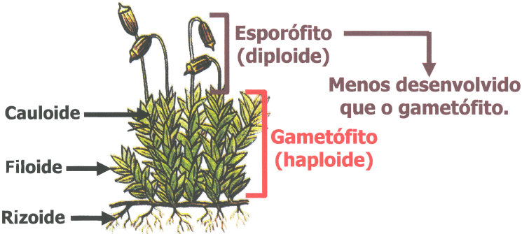
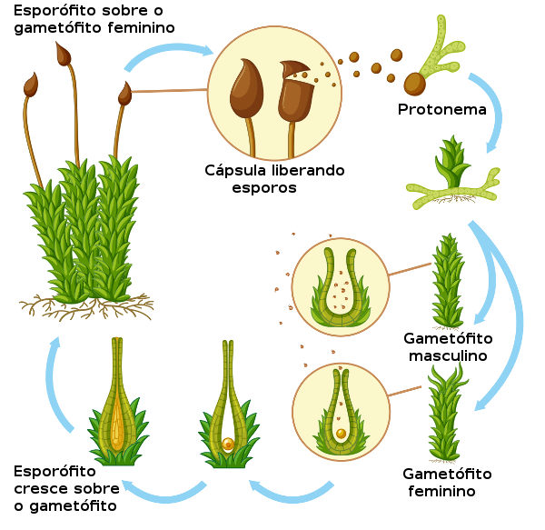

Briófitas
Sendo o primeiro grupo a partir da alga verde ancestral, as briófitas são plantas de pequeno porte que possuem os gametângios (estruturas formadoras de gametas) revestidos por células estéreis, e o embrião retido no gametângio feminino.
Nesse grupo, as plantas vivem preferencialmente em ambientes úmidos, pois, revestindo sua epiderme, há uma fina camada de cera que controla a transpiração, mas não que é suficiente para a perda intensa de líquido. Além disso, elas dependem da água para a reprodução assexuada, pois seus gametas masculinos são flagelados, deslocando-se apenas em meio líquido.
Estrutura
As briófitas possuem rizóides, caulóides e filóides, que são estruturas semelhantes à raiz, caule e folha, respectivamente. Elas não possuem vasos condutores de seiva (xilema e floema), por isso a absorção de água e sais minerais é feita por todo o corpo da planta e, quando absorvidos pelo rizóide, é transportada lentamente célula à célula.
Ciclo de vida
Em seu ciclo reprodutivo, as briófitas têm a fecundação feita através da água: as gotas fazem com que os anterozoides (gametas masculino) sejam lançados para um arquegônio (estrutura produtora de gameta feminino), onde nadam em direção à oosfera (gameta feminino).
Assim, é feita a fecundação, originando o zigoto, que se desenvolve dentro do arquegônio. Esse zigoto forma o esporófito e esse, por sua vez, forma, através da meiose, os esporos. Os esporos, ao cairem em solo adequado, germinam dando origem aos gametófitos femininos e masculinos, reiniciando o ciclo.
